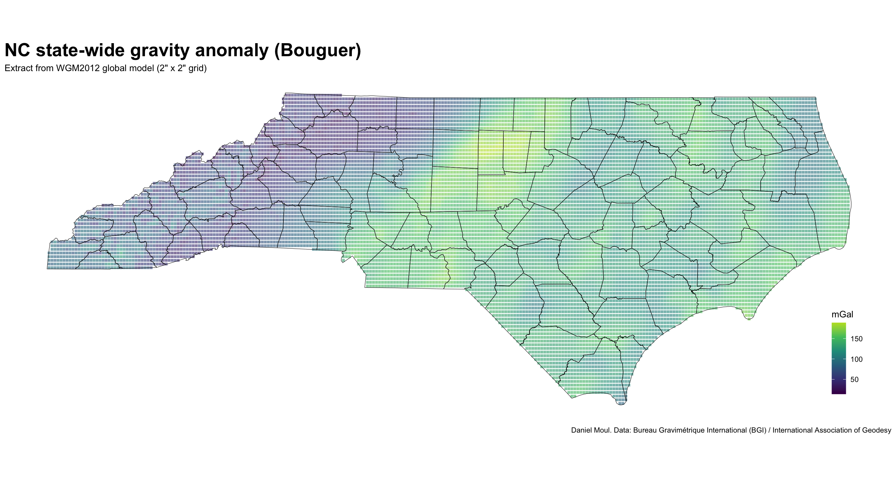

Since some of the datasheets include modeled gravity, let’s dig into this topic.
5.1 Introduction: Gravity and elevation
What does gravity have to do with elevation? And why is it interesting enough to dwell on here? All other things being equal, stepping on a scale at higher elevation results in a lower reading on the scale (if the scale is accurate enough!). And local gravity varies for more reasons than elevation.
5.1.1 Simple explanation
Ignoring local conditions, the acceleration due to gravity \(g\) at altitude \(h\) above sea level is
where radius of the earth \(r_e = 6371.009\ km\) and average acceleration due to gravity at sea level is \(9.80665\ m/s^2\)1. Elevation and is measured relative to a specific vertical datum. In the case of US survey marks, the datum used here is the North American vertical datum of 1988 (NAVD 88).
5.1.2 Less simple explanation
A less simple model takes into account the earth’s spinning, which causes a larger radius at the equator than at the poles and thus lower gravity at the equator. Thus gravity varies as a function of latitude. As noted at https://en.wikipedia.org/wiki/Theoretical_gravity#Basic_formulas :
WELMEC formula: In all German standards offices the free-fall acceleration g is calculated in respect to the average latitude \(lat\) and the average height above sea level \(h\) with the WELMEC–Formel:
This change in gravity due to latitude can be visualized as follows.
Show the code
dta_for_plot <- gravity_delta_theoretical_welmec_0_90 |>arrange(grav) |>mutate(grav_mgal = grav /1.0e-5,delta_equator = grav_mgal -min(grav_mgal))dta_for_plot2 <- dta_for_plot |>filter(lat_degree ==36)p1 <- dta_for_plot |>ggplot(aes(grav, lat_degree)) +geom_line(linewidth =0.25) +geom_point(size =0.5) +geom_point(data = dta_for_plot2,size =3, shape =21) +scale_x_continuous(expand =expansion(mult =c(0, 0.05)),sec.axis =sec_axis(~ . /1.0e-5, name ="Gravity mGal")) +scale_y_continuous(expand =expansion(mult =c(0, 0.05)),breaks =c(0, 30, 60, 90)) +labs(subtitle ="Local gravity",x ="Gravity ms^-2",y ="Latitude in degrees" )at_lat_36 <- (9.780318-9.80665) /1e-5+ dta_for_plot2$delta_equatorp2 <- dta_for_plot |>ggplot(aes(delta_equator, lat_degree)) +geom_line(linewidth =0.25) +geom_point(size =0.5) +geom_point(data = dta_for_plot2,size =3, shape =21) +annotate("text", x = dta_for_plot2$delta_equator, y = dta_for_plot2$lat_degree -5,label =glue("At {dta_for_plot2$lat_degree} degrees (which is within our four counties),","\nadjusting for latitude adds {round(dta_for_plot2$delta_equator)} mGal","\ncompared to gravity at the equator.","\nIt adds {round(at_lat_36)} mGal compared to the", "\naverage gravity 9.80665 ms^-2", " ({round(9.80665 / 1e-5)} mGal)"),hjust =0, vjust =1, size =3 ) +scale_x_continuous(expand =expansion(mult =c(0, 0.05)),# sec.axis = sec_axis(~ . / 1.0e-5, name = "Gravity mGal") ) +scale_y_continuous(expand =expansion(mult =c(0, 0.05)),breaks =c(0, 30, 60, 90)) +labs(subtitle ="Change in local gravity compared to equator",x ="Gravity mGal",y =NULL )p1 + p2 +plot_annotation(title ="Affect of latitude on gravity at sea level",subtitle ="WELMEC–Formel formula",caption ="Daniel Moul. Using equation at en.wikipedia.org/wiki/Theoretical_gravity" )
Figure 5.1: Affect of latitude on gravity at sea level
Note that the US NGS uses another method to model gravity, which in pursuit of greater accuracy2 includes some values being “interpolated from observed gravity values”.
5.2 Modeled gravity
Since the NGS cannot afford to measure gravity in every location, they use modeled gravity. For example, as noted in the datasheet for PID EZ0704:
EZ0704 *CURRENT SURVEY CONTROL
EZ0704 ______________________________________________________________________
EZ0704* NAD 83(1986) POSITION- 35 47 07.95 (N) 078 40 03.18 (W) HD_HELD1
EZ0704* NAVD 88 ORTHO HEIGHT - 119.962 (meters) 393.58 (feet) ADJUSTED
EZ0704 ______________________________________________________________________
EZ0704 GEOID HEIGHT - -32.775 (meters) GEOID18
EZ0704 DYNAMIC HEIGHT - 119.859 (meters) 393.24 (feet) COMP
EZ0704 MODELED GRAVITY - 979,772.2 (mgal) NAVD 88
....
EZ0704.The dynamic height is computed by dividing the NAVD 88
EZ0704.geopotential number by the normal gravity value computed on the
EZ0704.Geodetic Reference System of 1980 (GRS 80) ellipsoid at 45
EZ0704.degrees latitude (g = 980.6199 gals.).
EZ0704
EZ0704.The modeled gravity was interpolated from observed gravity values.
5.3 Survey marks and model gravity
Figure 5.2 shows a general trend: in these four counties, gravity increases as you move to the northwest. This is somewhat counter-intuitive, since elevation is increasing (and thus gravity should be decreasing, all else being equal).
But of course all else is not equal. There are a number of dynamics at work here:3
As elevation increases, gravity decreases at a rate of about 0.5 mGal every 10 ft.
The radius of the earth is largest at the equator due to the buldge caused by the rotation of the earth. The radius at the poles is the smallest. Thus gravity is weakest at the equator (at constant elevation), and as you move north, gravity increases. At latitude 37 (just north of the NC border with Virginia) gravity increases at a rate of about 1.5 mGal/min. One minute is about 1.2 miles (6,300 ft or 1.9 km).
Differences in the density of the upper mantle, crust, and amount of water in the rocks affect local gravity. The three techniques used to model local gravity (Figure 5.7) all show a gravity anomalies in thr range of about 85 mGal. This is about the range we see in Figure 5.2, suggesting that the “modeled gravity” reported in the datasheets is drawing from a model like WGM2012. The data sheet notes that “The modeled gravity was interpolated from observed gravity values.” WGM2012 and any other useful model would use observed gravity to ground it as well, right?
State-wide, the highest magnitude local gravity anomalies4 are in a band that includes Orange and Durham, the two north-most counties of our four counties (Figure 5.6, Figure 5.7) which also have the strongest gravity (Figure 5.4). The shape of the gradient seems to follow the fall line, suggesting to me that there is more denser rock in the crust of the Piedmont than in the transition to largely sedimentary rock to the southeast. In other words, (3) seems to be overpowering (1) and (2) in these counties. I assume the full answer is not that simple.
Figure 5.3 shows there is not a 1:1 correspondence between model_grav and ortho_ht. The shape of panel B somewhat matches the shape of the left half of panel A. But why are there two extra sections in panel A with higher gravity?
Show the code
p1 <- data_for_plot_gravity |>ggplot() +geom_histogram(aes(model_grav),bins =20,na.rm =TRUE,fill ="firebrick",alpha =0.6) +labs(tag ="A" )p2 <- data_for_plot_gravity |>ggplot() +geom_histogram(aes(ortho_ht),bins =20,na.rm =TRUE,fill ="firebrick",alpha =0.6) +scale_x_reverse() +labs(x ="ortho_ht (axis order reversed)",y =NULL,tag ="B" )p1 + p2 +plot_annotation(title ="Model gravity and orthographic height",subtitle =glue("{comma(n_marks_counties)} marks in {n_counties} NC counties","; units: mGal and m respectively"),caption = my_caption )
Figure 5.3: Model gravity and ortho_ht histograms
5.4 Local gravity makes things interesting
The two extra “bumps” in Figure 5.3 panel A correspond to the top two teal-blue horizontal “arms” in Figure 5.4 (the second large arm in red is hidden in the main shape of Figure 5.3 panel A). I assume the “arms” are the result of differing density in the ground in Orange and Chatham counties (or more specifically: differing density gradients or density contrasts5, since in these “arms” the gravity stays approximately constant while elevation increases. In other words, the geology of these two pairs of counties includes similar gradients in density at different mean elevations.
The red line is the result of using average gravity in the simple formula Equation 5.1 presented at the beginning of this chapter. The results are too high by about 800 mGal compared to the NGS model and the WELMEC model (Equation 5.2) which include the adjustment of latitude; the latter is the blue line.
Show the code
ggplot() +geom_line(data = dta_gravity_theoretical_simple,aes(x = ortho_ht, y = model_grav -800),color ="firebrick", linewidth =0.25) +geom_line(data = dta_gravity_theoretical_welmec_mgal,aes(x = ortho_ht, y = model_grav),color ="blue", linewidth =0.25) +geom_point(data = data_for_plot_gravity,aes(ortho_ht, model_grav, color = county),size =0.5, alpha =0.6,na.rm =TRUE) +guides(color =guide_legend(override.aes =c(size =3))) +labs(title ="Gravity comparisons - county differences",subtitle =glue("Blue line is WELMEC formula","; red line is simple gravity formula - 800 mGal", "\nwhich puts it on the same scale as model gravity for this plot","\northo_ht in m; model_grav in mGal"),x ="Ortho height",y ="model_grav",caption = my_caption )
Figure 5.4: Gravity comparisons - county differences
Local geology contributes to the the local variation in density and is shown in the Geologic Map of North Carolina “The Terranes and Major Geologic Elements of North Carolina” published by the NC Department of Environmental Quality - Geological Survey.
Blue: Carolina terrane: This terrane consists of heated and deformed volcanic and sedimentary rocks. The terrane contains rocks associated with a series of oceanic volcanic islands about 540-630 million years ago. The terrane is known for its numerous abandoned gold mines and prospects. North Carolina led the nation in gold production before the California Gold Rush of 1849. In recent decades, only minor gold mining has taken place, but mining companies continue to show interest in the area. Mineral production is crushed stone for road aggregate, light-weight aggregate and pyrophyllite for refractories, ceramics, fillers, paint and insecticide carriers.
Green: Triassic basin - Deep River basin: Triassic basins: The Triassic basins are filled with sedimentary rocks that formed about 220 million years ago. Streams carried mud, silt, sand and gravel, from adjacent highlands into rift valleys similar to those of Africa today. The Triassic basins formed when the super continent Pangea began to split apart. The mudstones are mined and processed to make brick, sewer pipe, structural tile and drain tiles. Coal deposits have been mined in the past. Potential deposits of natural gas are present in the Triassic basins of North Carolina.
Red: Diabase: Diabase is an igneous rock that occurs as sills and dikes within the Triassic basins and is present as dikes throughout the Piedmont of the State. Diabase intruded into the existing rock of the State approximately 200 million years ago as the Atlantic Ocean was beginning to form during the breakup of the super continent Pangea. Diabase is a good source of crushed stone. The fractures present in weathered diabase dikes and sills can be important sources of groundwater.
Purple: Crabtree terrane: The terrane consists mostly of metamorphosed igneous, volcanic, and sedimentary rocks. A unique rock of the terrane includes the graphitic schist in the Raleigh area. These rocks were part of a large chain of ancient volcanic islands that formed off the coast of the ancient continent called Gondwana. The igneous rocks are good sources for crushed stone for road aggregate and construction purposes.
Blue-purple: Raleigh terrane: The terrane consists mostly of metamorphosed igneous rocks. The rocks were part of a large chain of ancient volcanic islands that formed off the coast of the ancient continent called Gondwana. In the 19th century, there were a number of small building stone quarries in this region, but today the main mineral product is crushed stone for construction and road aggregate.
Grey: Falls Lake terrane: The terrane consists mostly of metamorphosed sedimentary rock and lesser amounts of metamorphosed igneous rocks. The terrane is dominated by the Falls Lake schist. Historically, the terrane is known as a source of talc that was used by early settlers for carving tombstones. The rocks were part of a large chain of ancient volcanic islands that formed off the coast of the ancient continent called Gondwana.
Pink: Late Paleozoic intrusions: Late Paleozoic intrusions are mainly composed of the igneous rock granite and granodiorite. These rocks intruded as giant blobs of molten rock (magma) during the formation of the Appalachian Mountain chain (approximately 280 to 320 million years ago). Late Paleozoic granites and granodiorites are good sources of crushed stone, quartz, feldspar, and mica. This rock type is also linked to areas with elevated Radon concentrations in air and groundwater.
Brown: Spring Hope terrane: This terrane contains slightly metamorphosed volcanic and sedimentary rocks similar to those to the Carolina terrane. The rocks are poorly exposed and partially covered by Coastal Plain sediments. The metamorphic rocks, 525 to 630 million years old, are intruded by approximately 300 million year old granitic bodies. Gold was once mined in the terrane, and small occurrences of molybdenite, an ore of molybdenum, have been prospected here. Crushed stone, clay, sand and gravel are currently mined in this belt.
Yellow: Coastal Plain: The Coastal Plain is a wedge of mostly marine sedimentary rocks that gradually thickens to the east. The Coastal Plain is the largest geologic element in the state, covering about 45 percent of the land area. The most common sediment types are sand and clay, although a significant amount of limestone occurs in the southern part of the Coastal Plain. In the Coastal Plain, geology is best understood from studying data gathered from well drilling. The state’s most important mineral resource in terms of dollar value is phosphate, an important fertilizer component mined near Aurora, Beaufort County. Industrial sand for making glass, for use in filtration and sandblasting is mined in the Sandhills area.
Below I show the state-wide (Figure 5.6 Bouguer method) and four-county anomalies (Figure 5.7 all three common methods) based on the WGM2012 model. I used WGM20126 since the Bureau Gravimétrique International (BGI) makes regional data available for easy plotting:7
WGM2012 is the first release of a high resolution grids and maps of the Earth’s gravity anomalies (Bouguer, isostatic and surface free-air), computed at global scale in spherical geometry. It has been realized by the Bureau Gravimétrique International (BGI) in the frame of collaborations with international organizations such as Commission for the Geological Map of the World (CGMW), UNESCO, International Association of Geodesy (IAG), International Union of Geodesy and Geophysics (IUGG), International Union of Geological Sciences (IUGS) and with various scientific institutions.
WGM2012 gravity anomalies are derived from the available Earth global gravity models EGM2008 and DTU10 and include 1’x1′ resolution terrain corrections derived from ETOPO1 model that consider the contribution of most surface masses (atmosphere, land, oceans, inland seas, lakes, ice caps and ice shelves). These products have been computed by means of a spherical harmonic approach using theoretical developments carried out to achieve accurate computations at global scale (Balmino, G., Vales, N., Bonvalot, S. and Briais, A., 2011. Spherical harmonic modeling to ultra-high degree of Bouguer and isostatic anomalies. Journal of Geodesy. DOI 10.1007/s00190-011-0533-4).
WGM2012 Reference / Authors
Bonvalot, S., Balmino, G., Briais, A., M. Kuhn, Peyrefitte, A., Vales N., Biancale, R., Gabalda, G., Reinquin, F., Sarrailh, M., 2012. World Gravity Map. Commission for the Geological Map of the World. Eds. BGI-CGMW-CNES-IRD, Paris. https://doi.org/10.18168/bgi.23
Show the code
ggplot(bouguer_nc_state) +geom_sf(aes(color = mgal),shape =15, size =1.25,alpha =0.6) +geom_sf(data = nc_counties_all_tigris,color ="black",fill =NA) +scale_color_viridis_c(end =0.9) +theme(axis.text =element_blank(),axis.ticks =element_blank(),legend.position =c(0.95, 0.2) ) +labs(title ="NC state-wide gravity anomaly (Bouguer)",subtitle ='Extract from WGM2012 global model (2" x 2" grid)',caption ="Daniel Moul. Data: Bureau Gravimétrique International (BGI) / International Association of Geodesy",x =NULL,y =NULL,color ="mGal", )

Figure 5.6: NC state-wide gravity anomaly (Bouguer) from WGM2012 global model